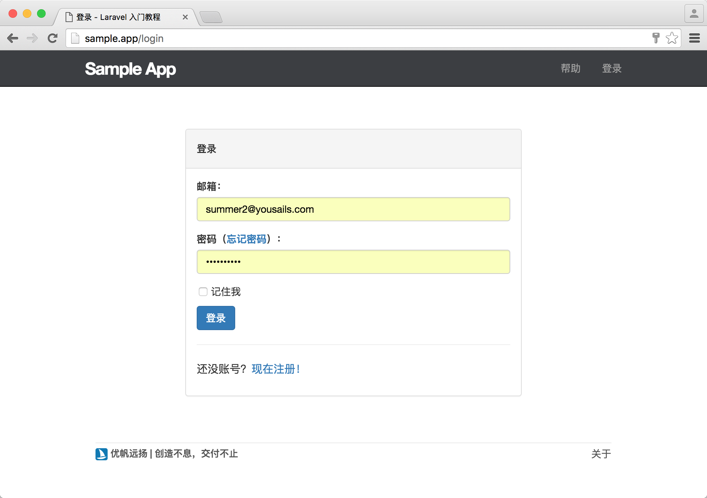
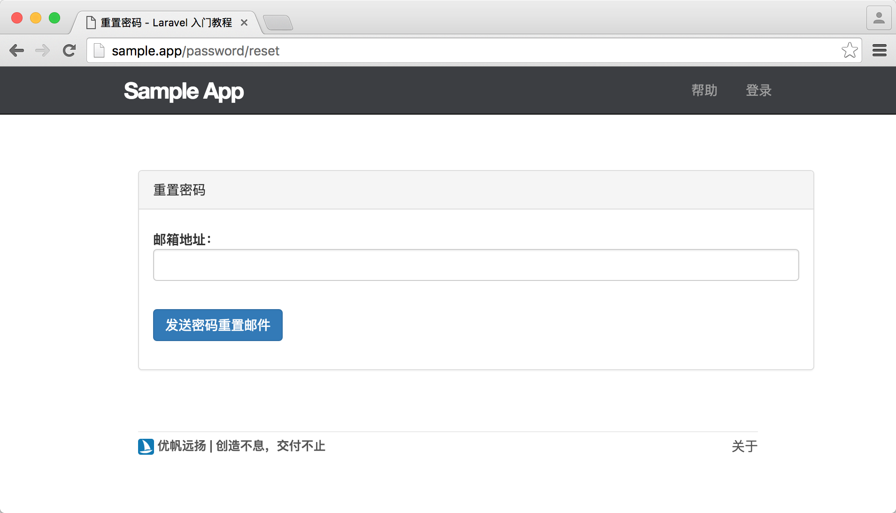
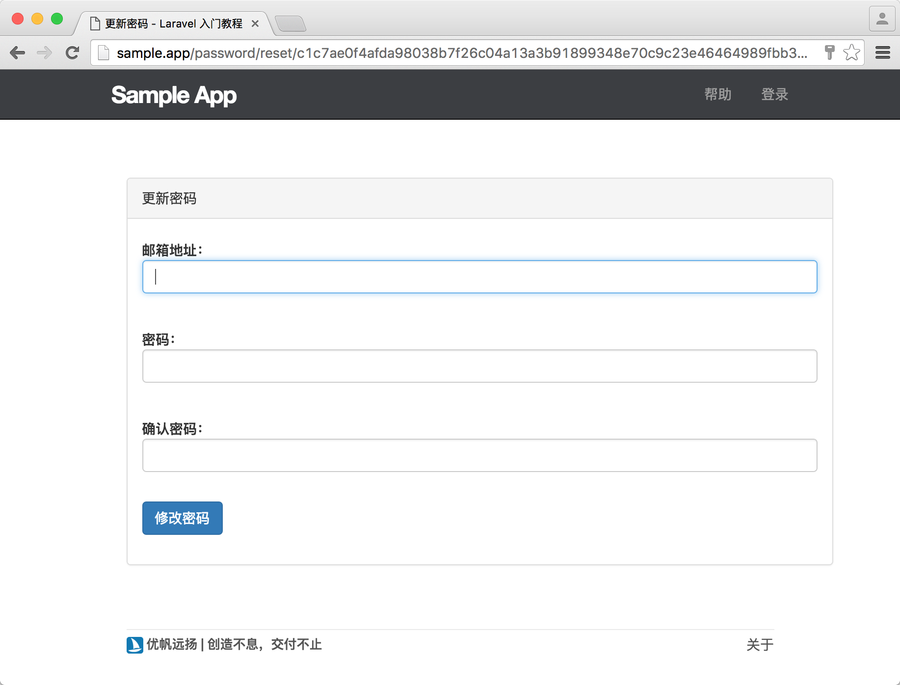
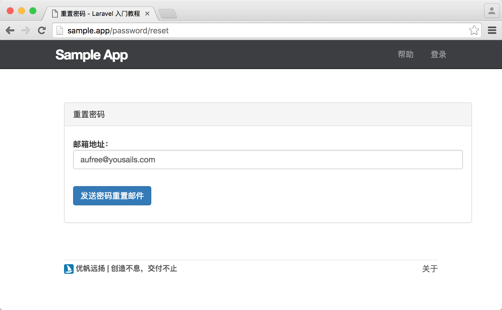
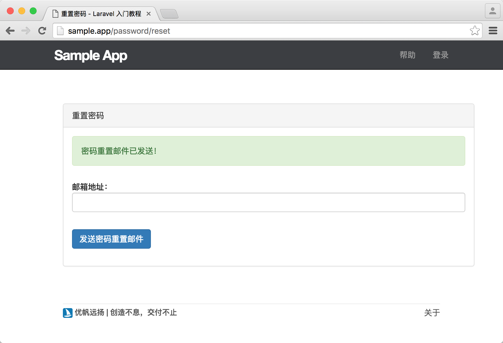
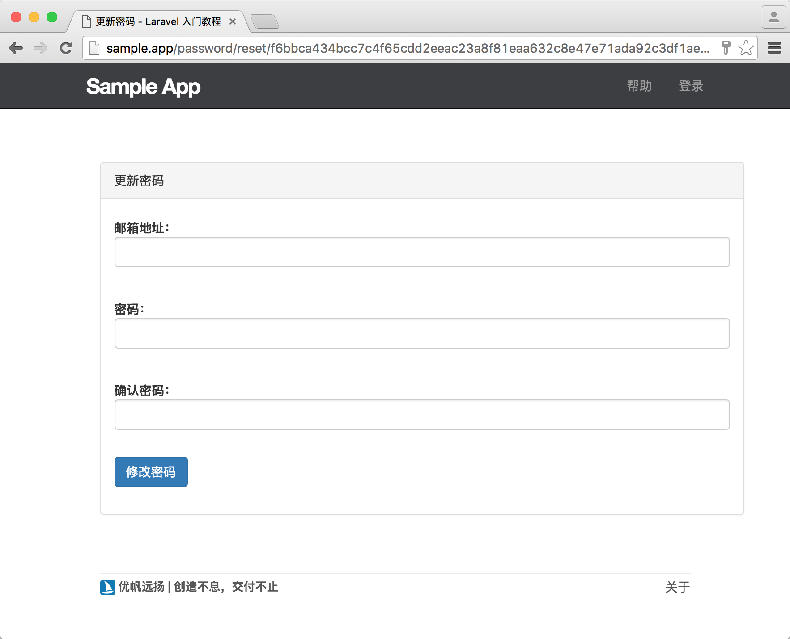

9.3. 密码重设
密码重设
上一节我们完成了账户激活功能，接着让我们继续开发密码重设功能。由于很多常用的 Web 应用都会提供密码重设的功能，因此 Laravel 将此功能内置到了框架中，减少了很多开发成本。
不过即便我们要使用 Laravel 内置的重设密码功能，也需要知道在日常开发时，大多数 Web 工程师是如何为网站添加重设密码功能的。一般来说，密码重设的步骤如下：
- 用户点击重设密码链接并跳转到重设密码页面；
- 在重设密码页面输入邮箱信息并提交；
- 控制器通过该邮箱查找到指定用户并为该用户生成一个密码令牌，接着将该令牌以链接的形式发送到用户提交的邮箱上；
- 用户查看自己个人邮箱，点击重置密码链接跳转到重置密码页面；
- 用户在该页面输入自己的邮箱和密码并提交；
- 控制器对用户的邮箱和密码重置令牌进行匹配，匹配成功则更新用户密码；
了解其中的整个流程之后，接下来的开发就容易多了。
资源
在密码重设功能中，我们还会用到一个用来保存密码重置令牌的数据表，Laravel 已默认为我们生成好了该数据表。
database/migrations/2014_10_12_100000_create_password_resets_table.php
<?php
use Illuminate\Support\Facades\Schema;
use Illuminate\Database\Schema\Blueprint;
use Illuminate\Database\Migrations\Migration;
class CreatePasswordResetsTable extends Migration
{
/**
* Run the migrations.
*
* @return void
*/
public function up()
{
Schema::create('password_resets', function (Blueprint $table) {
$table->string('email')->index();
$table->string('token')->index();
$table->timestamp('created_at');
});
}
/**
* Reverse the migrations.
*
* @return void
*/
public function down()
{
Schema::dropIfExists('password_resets');
}
}可以看到 Laravel 默认生成的密码重置表有三个字段 email, token, created_at，分别用于生成用户邮箱、密码重置令牌、密码重置令牌的创建时间，并为邮箱和密码重置令牌加上了索引，这样在数据库使用这两个字段进行查找时效率更快。由于我们在前面已经执行过了迁移，因此现在我们的数据库已经拥有了 password_resets 表，无需再次运行迁移生成。
Laravel 将密码重设功能相关的逻辑代码都放在了 ForgotPasswordController 和 ResetPasswordController 中，因此我们接下来需要将重设密码相关的路由指定到该控制器上。
routes/web.php
<?php
.
.
.
Route::get('password/reset', 'Auth\ForgotPasswordController@showLinkRequestForm')->name('password.request');
Route::post('password/email', 'Auth\ForgotPasswordController@sendResetLinkEmail')->name('password.email');
Route::get('password/reset/{token}', 'Auth\ResetPasswordController@showResetForm')->name('password.reset');
Route::post('password/reset', 'Auth\ResetPasswordController@reset')->name('password.update');该路由列表的信息如下所示：
| HTTP 请求 | URL | 动作 | 作用 |
|---|---|---|---|
| GET | /password/reset | Auth\ForgotPasswordController @showLinkRequestForm |
显示重置密码的邮箱发送页面 |
| POST | /password/email | Auth\ForgotPasswordController @sendResetLinkEmail |
邮箱发送重设链接 |
| GET | /password/reset/{token} | Auth\ResetPasswordController @showResetForm |
密码更新页面 |
| POST | /password/reset | Auth\ResetPasswordController @reset |
执行密码更新操作 |
现在路由已配置完成，由于 Laravel 在 ForgotPasswordController 和 ResetPasswordController 中已经为我们处理好一些相关逻辑，因此我们现在只需要将精力专注于视图的构建就行了。
接下来让我们修改用户的登录页面，添加修改密码的链接，方便忘记密码的用户在第一时间找到入口。
resources/views/sessions/create.blade.php
@extends('layouts.default')
@section('title', '登录')
@section('content')
<div class="col-md-offset-2 col-md-8">
<div class="panel panel-default">
<div class="panel-heading">
<h5>登录</h5>
</div>
<div class="panel-body">
@include('shared._errors')
<form method="POST" action="{{ route('login') }}">
{{ csrf_field() }}
<div class="form-group">
<label for="email">邮箱：</label>
<input type="text" name="email" class="form-control" value="{{ old('email') }}">
</div>
<div class="form-group">
<label for="password">密码（<a href="{{ route('password.request') }}">忘记密码</a>）：</label>
<input type="password" name="password" class="form-control" value="{{ old('password') }}">
</div>
<div class="checkbox">
<label><input type="checkbox" name="remember"> 记住我</label>
</div>
<button type="submit" class="btn btn-primary">登录</button>
</form>
<hr>
<p>还没账号？<a href="{{ route('signup') }}">现在注册！</a></p>
</div>
</div>
</div>
@stop
重置密码表单
Laravel 生成的密码控制器在 getEmail 动作中返回的视图为 auth.passwords.email，因此让我们新建该视图，并在里面加上用户重置密码的表单。
resources/views/auth/passwords/email.blade.php
@extends('layouts.default')
@section('title', '重置密码')
@section('content')
<div class="container">
<div class="row">
<div class="col-md-8 col-md-offset-2">
<div class="panel panel-default">
<div class="panel-heading">重置密码</div>
<div class="panel-body">
@if (session('status'))
<div class="alert alert-success">
{{ session('status') }}
</div>
@endif
<form class="form-horizontal" method="POST" action="{{ route('password.email') }}">
{{ csrf_field() }}
<div class="form-group{{ $errors->has('email') ? ' has-error' : '' }}">
<label for="email" class="col-md-4 control-label">邮箱地址：</label>
<div class="col-md-6">
<input id="email" type="email" class="form-control" name="email" value="{{ old('email') }}" required>
@if ($errors->has('email'))
<span class="help-block">
<strong>{{ $errors->first('email') }}</strong>
</span>
@endif
</div>
</div>
<div class="form-group">
<div class="col-md-6 col-md-offset-4">
<button type="submit" class="btn btn-primary">
发送密码重置邮件
</button>
</div>
</div>
</form>
</div>
</div>
</div>
</div>
</div>
@endsection
getReset 动作对应的 auth.passwords.reset 视图构建如下。
resources/views/auth/passwords/reset.blade.php
@extends('layouts.default')
@section('title', '更新密码')
@section('content')
<div class="container">
<div class="row">
<div class="col-md-8 col-md-offset-2">
<div class="panel panel-default">
<div class="panel-heading">更新密码</div>
<div class="panel-body">
@if (session('status'))
<div class="alert alert-success">
{{ session('status') }}
</div>
@endif
<form class="form-horizontal" method="POST" action="{{ route('password.request') }}">
{{ csrf_field() }}
<input type="hidden" name="token" value="{{ $token }}">
<div class="form-group{{ $errors->has('email') ? ' has-error' : '' }}">
<label for="email" class="col-md-4 control-label">邮箱地址：</label>
<div class="col-md-6">
<input id="email" type="email" class="form-control" name="email" value="{{ $email or old('email') }}" required autofocus>
@if ($errors->has('email'))
<span class="help-block">
<strong>{{ $errors->first('email') }}</strong>
</span>
@endif
</div>
</div>
<div class="form-group{{ $errors->has('password') ? ' has-error' : '' }}">
<label for="password" class="col-md-4 control-label">密码：</label>
<div class="col-md-6">
<input id="password" type="password" class="form-control" name="password" required>
@if ($errors->has('password'))
<span class="help-block">
<strong>{{ $errors->first('password') }}</strong>
</span>
@endif
</div>
</div>
<div class="form-group{{ $errors->has('password_confirmation') ? ' has-error' : '' }}">
<label for="password-confirm" class="col-md-4 control-label">确认密码：</label>
<div class="col-md-6">
<input id="password-confirm" type="password" class="form-control" name="password_confirmation" required>
@if ($errors->has('password_confirmation'))
<span class="help-block">
<strong>{{ $errors->first('password_confirmation') }}</strong>
</span>
@endif
</div>
</div>
<div class="form-group">
<div class="col-md-6 col-md-offset-4">
<button type="submit" class="btn btn-primary">
修改密码
</button>
</div>
</div>
</form>
</div>
</div>
</div>
</div>
</div>
@endsection我们在用户进行表单提交时，会将密码重置的令牌信息通过隐藏输入框一同提交给密码控制器的 getReset 进行处理。
<input type="hidden" name="token" value="{{ $token }}">
另外还有一点需要我们注意的是，Laravel 在 ResetPasswordController 中默认为我们设置好了密码重置成功后的重定向地址 /home，而由于我们在本项目中并没有为 /home 绑定任何控制器动作，因此我们需要对 ResetPasswordController 的 $redirectPath 属性进行修改，将默认重定向地址改为 /，改动后的 ResetPasswordController 如下：
app/Http/Controllers/Auth/ResetPasswordController.php
<?php
namespace App\Http\Controllers\Auth;
use App\Http\Controllers\Controller;
use Illuminate\Foundation\Auth\ResetsPasswords;
class ResetPasswordController extends Controller
{
/*
|--------------------------------------------------------------------------
| Password Reset Controller
|--------------------------------------------------------------------------
|
| This controller is responsible for handling password reset requests
| and uses a simple trait to include this behavior. You're free to
| explore this trait and override any methods you wish to tweak.
|
*/
use ResetsPasswords;
/**
* Where to redirect users after resetting their password.
*
* @var string
*/
protected $redirectTo = '/';
/**
* Create a new controller instance.
*
* @return void
*/
public function __construct()
{
$this->middleware('guest');
}
}邮件程序
接下来我们需要定制 Laravel 密码重置邮件功能。
- 生成消息通知文件：
$ php artisan make:notification ResetPassword以上命令会生成 app/Notifications/ResetPassword.php 文件；
- 定制消息通知文件：
app/Notifications/ResetPassword.php
<?php
namespace App\Notifications;
use Illuminate\Bus\Queueable;
use Illuminate\Notifications\Notification;
use Illuminate\Contracts\Queue\ShouldQueue;
use Illuminate\Notifications\Messages\MailMessage;
class ResetPassword extends Notification
{
public $token;
public function __construct($token)
{
$this->token = $token;
}
public function via($notifiable)
{
return ['mail'];
}
public function toMail($notifiable)
{
return (new MailMessage)
->line('这是一封密码重置邮件，如果是您本人操作，请点击以下按钮继续：')
->action('重置密码', url(config('app.url').route('password.reset', $this->token, false)))
->line('如果您并没有执行此操作，您可以选择忽略此邮件。');
}
}- User 模型里调用：
app/Models/User.php
<?php
namespace App\Models;
.
.
.
use App\Notifications\ResetPassword;
class User extends Authenticatable
{
.
.
.
public function sendPasswordResetNotification($token)
{
$this->notify(new ResetPassword($token));
}
}增加了 use App\Notifications\ResetPassword; 和 sendPasswordResetNotification 方法。
- 发布密码重置的 Email 视图：
$ php artisan vendor:publish --tag=laravel-notifications发布的文件为 resources/views/vendor/notifications/email.blade.php ，这里我们先不做修改。
接下来我们可以尝试邮箱找回密码功能：

邮件发送成功：

因为我们现在设置了 MAIL_DRIVER=log，打开 laravel.log 文件，能看到有如下的 log 输出：
storage/logs/laravel.log
.
.
.
[2017-08-03 08:22:29] local.DEBUG: Message-ID: <19edf72e96bf9feb9337ebd869cad6e2@sample.test>
Date: Thu, 03 Aug 2017 08:22:29 +0000
Subject: Reset Password
From: Example <hello@example.com>
To: aufree@yousails.com
MIME-Version: 1.0
Content-Type: multipart/alternative;
boundary="_=_swift_v4_1501748549_0d8c06576261eec1114cf5b3a49abcf0_=_"
.
.
.
# Hello!
这是一封密码重置邮件，如果是您本人操作，请点击以下按钮继续：
重置密码: http://sample.test/password/reset/f6bbca434bcc7c4f65cdd2eeac23a8f81eaa632c8e47e71ada92c3df1ae739db
如果您并没有执行此操作，您可以选择忽略此邮件。
Regards,Laravel
If you’re having trouble clicking the "重置密码" button, copy and paste the URL below
into your web browser: [http://sample.test/password/reset/f6bbca434bcc7c4f65cdd2eeac23a8f81eaa632c8e47e71ada92c3df1ae739db](http://sample.test/password/reset/f6bbca434bcc7c4f65cdd2eeac23a8f81eaa632c8e47e71ada92c3df1ae739db)
© 2017 Laravel. All rights reserved.现在我们访问 log 中输出的重置密码链接：

并输入新密码即可完成整个重置流程。
至此，整个用户密码重设功能便完成了，由此我们可以看到 Laravel 到底有多么强大，开发效率多么高效。